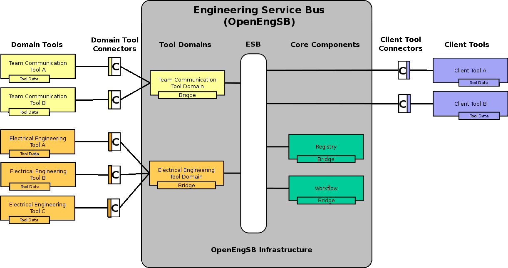

Chapter 14. Architecture of the OpenEngSB
This chapter tries to give a short summary of the most important concepts in the OpenEngSB architecture.
The following graphic shows the architecture of the OpenEngSB. In the center we use a bus system to integrate different modules. In this case we do not use a classical Enterprise Service Bus (ESB), but rather the OSGi service infrastructure via Spring-DM (Section 14.1, “OpenEngSB Enterprise Service Bus (ESB)”). We are using Apache Karaf as the OSGi environment. Karaf is used in this case, instead of a most basic OSGi environment, such as Apache Felix or Eclipse Equinox , because it supports us with additional features as extended console support and the feature definitions. This base infrastructure, including all modifications required for the OpenEngSB is called the Section 14.2, “ OpenEngSB Infrastructure”. Within the OpenEngSB Infrastructure so called Section 14.3, “OpenEngSB Components” and Section 14.4, “ OpenEngSB Tool Domains” are installed. Both types are written in a JVM compatible language, including OSGi configuration files to run in the OpenEngSB Infrastructure. They are explained later within this chapter. Different tools running outside the OpenEngSB Infrastructure are called Section 14.5, “Client Tools (Service Consumer)” or Section 14.6, “Domain Tools (Service Provider)”, depending on their usage scenario. To integrate and use them within the OpenEngSB so called Section 14.7, “Domain- and Client Tool Connectors” are used. All of these concepts are explained within the next sections.
Technical view of the OpenEngSB highlighting the most important concepts of the integration system
14.1. OpenEngSB Enterprise Service Bus (ESB)
One of the principal concepts for the OpenEngSB development is (if possible) to use already existing and proven solutions rather than inventing new ones. In this manner the OpenEngSB is an extension to the ESB concept. Typical ESBs such as Apache Servicemix or other JBI or ESB implementations always have the feeling to be huge and bloated. Complex integration patterns, messaging, huge configuration files and similar concepts/problems lead to this feeling. And those feelings are right. They are bloated. The OpenEngsB tries a different approach. Using Karaf as its base framework the environment is VERY lightweight. Depending on your use case you can use different configurations and packages out of the box.
14.2. OpenEngSB Infrastructure
While Apache Karaf provides a rich environment and functionality we're not done with it. Via the Spring-DM extension mechanism, AOP and the OSGi listener model the OpenEngSB directly extends the environment to provide own commands for the console, fine grained security and a full grown workflow model. These extensions are optional and not required if you want to use the platform alone. Add or remove them as required for your use case.
14.3. OpenEngSB Components
These libraries are the OpenEngSB core. The core is responsible to provide the OpenEngSB infrastructure as well as general services such as persistence, security and workflows. To provide best integration most of these components are tied to the OpenEngSB ESB environment. Nevertheless, feel free to add or remove them as required for your use case.
14.4. OpenEngSB Tool Domains
Although each tool provider gives a personal touch to its product their design is driven by a specific purpose. For example, there are many different issue trackers available, each having its own advantages and disadvantages, but all of them can create issues, assign and delete them. Tool Domains are based on this idea and distill the common functionality for such a group of tools into one Tool Domain interface (and component). Tool domains could be compared best to the concept of abstract classes in in object orientated programming languages. Similar to these, they can contain code, workflows, additional logic and data, but they are useless without a concrete implementation. Together with the ESB, the OpenEngSB infrastructure and the core components the tool domains finally result in the OpenEngSB.
14.5. Client Tools (Service Consumer)
Client Tools in the OpenEngSB concept are tools which do not provide any services, but consume services provided by Tool Domains and Core Components instead. A classical example from software engineering for a client tool is the Integrated Development Environment (IDE). Developer prefer to have the entire development environment, reaching from the tickets for a project to its build results, at hand. On the other hand they do not need to provide any services.
14.6. Domain Tools (Service Provider)
Domain Tools (Service Provider) Domain Tools, compared to Client Tools, denote the other extreme of only providing services. Classically, single purpose server tools, like issue tracker or chat server, match the category of Domain Tools best. Most tools in (software+) engineering environments fit of course in both categories, but since there are significant technically differences between them they are described as two different component types.
14.7. Domain- and Client Tool Connectors
Tool Connectors connect tools to the OpenEngSB environment. They implement the respective Tool Domain interface. As Client Tool Connectors they provide a Client Tool with an access to the OpenEngSB services. Again, Domain- and Client Tool Connectors are mostly mixed up but separated because of their technical differences. Additionally it is worth mentioning that tools can be integrated with more than one connector. This allows one tool to act in many different domains. Apache Maven is an example for such multi-purpose tools, relevant for build, as well as test and deploy of Java projects.
14.8. EDB (Engineering Data Base)
The EDB is a database with additional versioning feature. Its main job is to save and version so called tool data. Tool data are information units which are used by tools which are connect to the OpenEngSB. The versioning feature is necessary because it should be possible to restore tool data which has been changed in the meantime. Easiest example for this is the handling of signals.
Signals are little information units which can for example describe a circuit on a board. This circuits are once planned and building the base for workers which works at another layer (e.g. programmer). If this signals are changed and the other layers didn't notice that, the final product won't work or even worse. With the EDB it is possible to get noticed if a signal has changed and you can check what has been changed.
The connection between the tools and the EDB is done through the EngineeringDatabaseService provided by the core/edb bundle. This service gets a datasource (database) from the infrastructure/jpa bundle. The EngineeringDatabaseService is implemented with JPA, that means that every database which support JPA can be used as database backend for the EDB. As standard database backend was the H2 database chosen.
You have also the possibility to replace the database backend used for the EDB. A reason for this could be that your company wants a more performant database because the sets of tooldata are so big that the standard database isn't fast enough. For exchanging the database backend there are two cases: You want to replace the database with another database which is supported by openjpa or you take another database which isn't supported by openjpa. (List of supported databases can be checked here)
If you want to replace the standard database with another openjpa supported database, the procedure of changing is rather simple. You have to change the properties for the database connection of the infrastructure/jpa bundle. This is done by changing the config file "org.openengsb.infrastructure.jpa.cfg". This file is in the "assembly/src/main/filtered-resources/etc" folder. This file has following entries:
driverClassName=[here shall be the name of your driver class name,
example: org.h2.jdbcx.JdbcDataSource]
url=[here shall be the url to the used database file, example: jdbc:h2:openengsb]
username=[here shall be the username for authentication at the database]
password=[here shall be the password for authentication at the database]
After changing of this file, you have to assure that the driver which shall be used by the datasource is loaded at runtime. For that you have to load the database driver before the connection to the database is established. Your database bundle dependency should be added to the poms/pom.xml file. A dependency entry for the h2 database looks like this (the h2.version is defined as property in the same file. Info: had to alter the brackets so that they can be shown here. Also there should be a dollar sign before the {h2.version} part):
[dependency]
[groupId]com.h2database[/groupId]
[artifactId]h2[/artifactId]
[version]{h2.version}[/version]
[/dependency]
If you made sure the dependency is entered, you have to make sure the database is loaded before the database connection is established. For that just replace following code line in the file "assembly/src/main/filtered-resources/features.xml" with the new database driver bundle (as you can see you only have to copy and paste the values of the dependency):
[bundle]mvn:com.h2database/h2/{h2.version}[/bundle]
And thats all you have to do.
If you want to replace the standard database with another non openjpa supported database you will have to change first the datasource like descriped in the last paragraph. After that you have to write another bundle that provides the EngineeringDatabaseService. In this case you also have to reproduce all SQL commands and port it for the new database and replace the standard EngineeringDatabaseService.
Last but not least a few words about the working with the EDB. If you have models that shall be versioned by the EDB, the easiest way is to build this models as interfaces and let them extend the interface OpenEngSBModel. Such an interface can only contain getter and setter methods, since this interfaces can now be proxied through the EngineeringKnowledgeBase (EKB). As soon as you have done this, you are able to send such models with an event from a connector (Method for that is called "sendEDBEvent" and is accessable from every connector that AbstractOpenEngSBConnectorService extends, which shall be done by all connector implementations.
If your domain model requires sub models (like location for a contact), you have also to make this sub model an interface and let it extend OpenEngSBModel interface. In that way, the EDB is able to save all sub models if you save the root model. It is even possible to give a model a list of submodels, the EDB is able to handle that too and you have nothing else to do.
14.9. EKB (Engineering Knowledge Base)
The Engineering Knowledge Base (as it is now) is the partner of the EDB. The EKB enables two important features:load models from the EDB and generate proxies for domain models.
The first feature importance is quite clear. The EKB enables to load the models which are collected by the EDB. It's main work for that feature is to retrieve the model in a rare form from the EDB (in a only EDB readable format) and convert this rare form to the domain model the user requested.
The second feature makes it possible to simulate implementations of domain models. Like already mentioned in the EDB part, every domain model only consists of getter and setter pairs and extends the OpenEngSBModel interface. If you let the EKB proxy such models, your work you have to do to communicate with the EDB and versionize models is minimized. Also the EKB proxies does the whole converting work from the models to EDB readable format for you.
| Prev | Home | Next |
| Chapter 13. Quickstart | OpenEngSB Community | Chapter 15. Context Management |